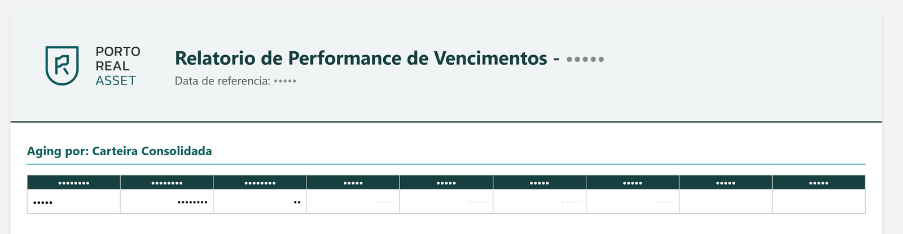
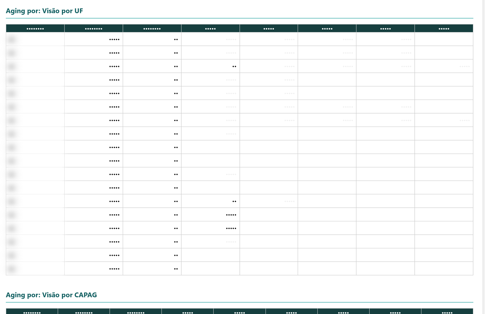
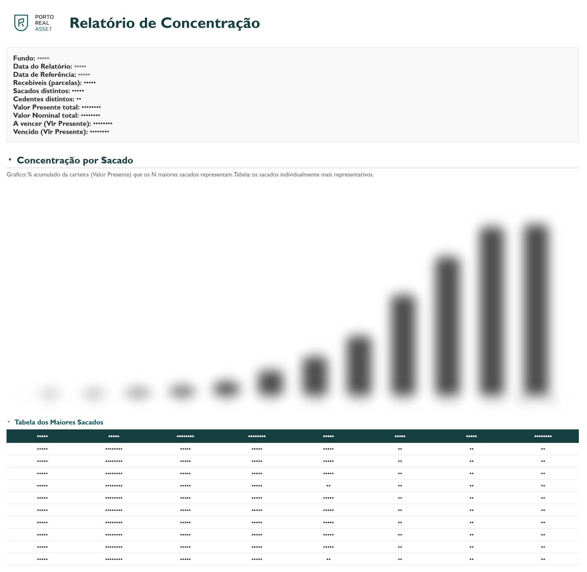
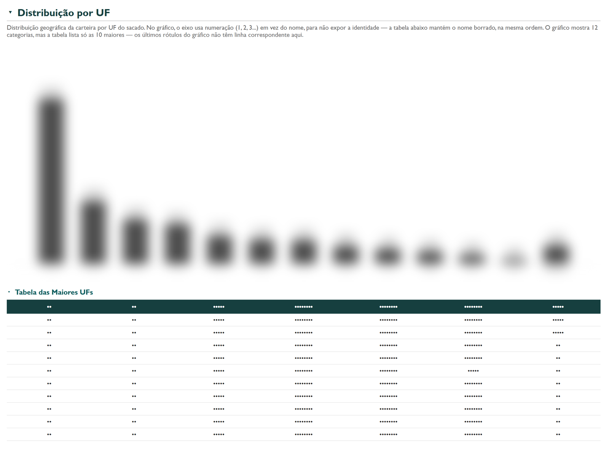
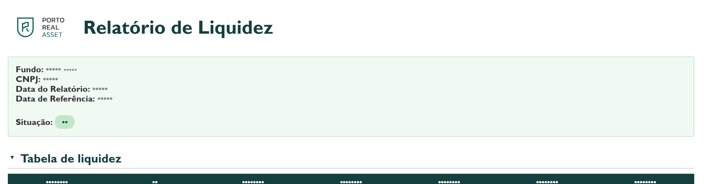
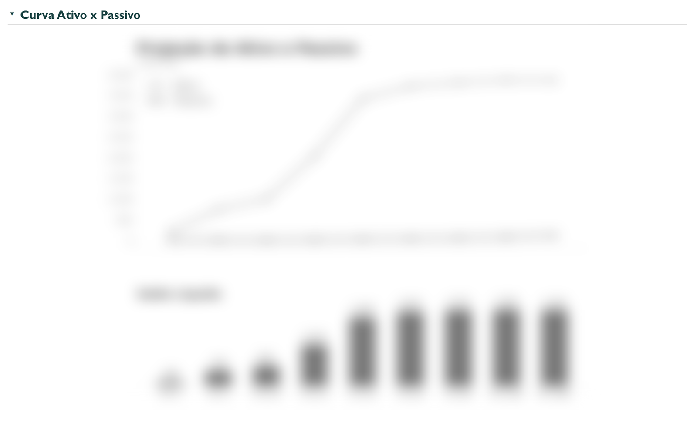
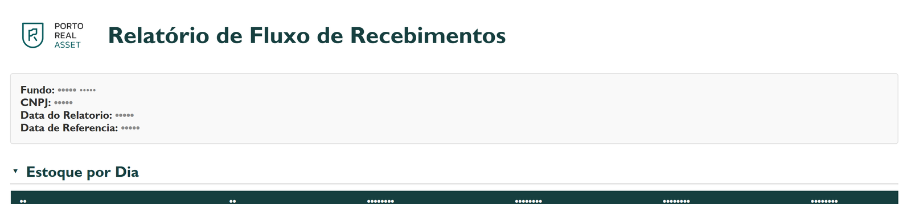
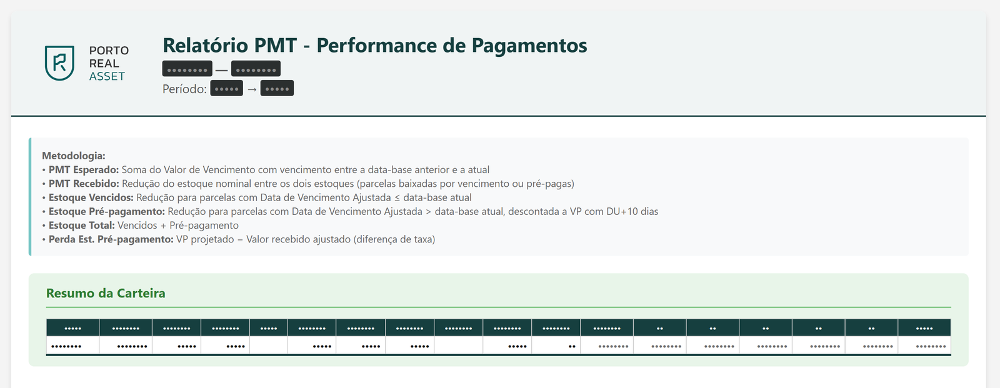
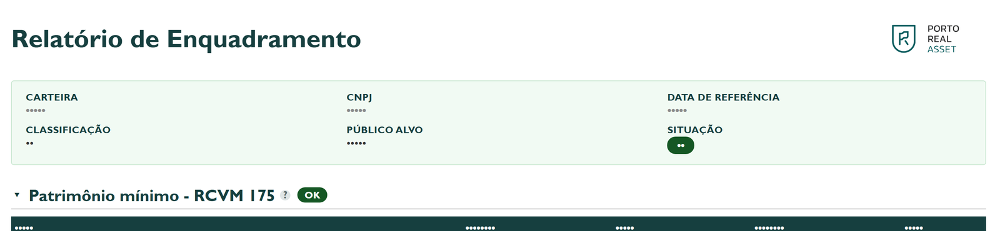
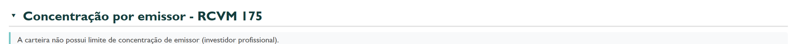

Six questions, six reports.
Seis perguntas, seis relatórios.
The last stretch of the pipeline: turning a consolidated CSV into something an investment committee reads at 9am. Every screenshot below is from a real report, with every name and number deleted before the image was rendered — not blurred, deleted from the page itself.
O último trecho do pipeline: transformar um CSV consolidado em algo que o comitê de investimentos lê às 9h. Cada print abaixo é de um relatório real, com todo nome e número apagado antes da imagem ser renderizada — não borrado, apagado da própria página.
One consolidated table, three audiences.
Uma tabela consolidada, três públicos.
By the time the ETL layer has produced a clean, consolidated position, three different questions still need answers: is anything overdue (aging), is the portfolio too concentrated in one debtor or region (concentration), and will there be enough cash to cover redemptions (liquidity)? A fourth question sits underneath all three — is the fund still inside its own regulatory limits (compliance)?
Quando a camada de ETL já produziu uma posição consolidada e limpa, três perguntas diferentes ainda precisam de resposta: há algo vencido (aging), a carteira está concentrada demais num devedor ou região (concentração), e vai sobrar caixa para cobrir resgates (liquidez)? Uma quarta pergunta sustenta as três — o fundo continua dentro dos próprios limites regulatórios (enquadramento)?
Each question gets its own generator rather than one mega-report: different audiences read at different frequencies, and a single failing report shouldn't block the other five.
Cada pergunta ganha seu próprio gerador em vez de um mega-relatório: públicos diferentes leem em frequências diferentes, e um relatório que falha não pode travar os outros cinco.
How a report gets from data to inbox
Do dado ao e-mail
The six generators
Os seis geradores
Aging — delinquency by every cut that matters
Aging — inadimplência por todo corte relevante
A heatmap of receivables by days-overdue bucket, sliced by portfolio, assignor, originator, state, and payment-capacity rating, plus a weighted score ranking the segments from healthiest to riskiest.
Um heatmap de recebíveis por faixa de dias em atraso, cortado por carteira, cedente, originador, UF e rating de capacidade de pagamento, mais um score ponderado ranqueando os segmentos do mais saudável ao mais arriscado.
Concentration — how spread out is the portfolio, really
Concentração — o quão pulverizada a carteira está, de fato
Nine cumulative-share curves (by debtor, product, PDD band, agreement, originator, referral partner, state, payment-capacity rating, age bracket) answering the same question nine ways: what share of the book do the N largest exposures represent?
Nove curvas de participação acumulada (por sacado, produto, faixa de PDD, convênio, originador, promotora, UF, rating de capacidade e faixa etária) respondendo a mesma pergunta de nove formas: que fatia da carteira as N maiores exposições representam?
Liquidity — will there be cash when redemptions land
Liquidez — vai ter caixa quando os resgates chegarem
Projects the fund's asset and liability cash flows forward using table-driven amortization rules, a senior/subordinated waterfall, and a sensitivity matrix for stress scenarios.
Projeta os fluxos de caixa de ativo e passivo do fundo usando regras de amortização orientadas a dados, uma cascata sênior/subordinada e uma matriz de sensibilidade para cenários de estresse.
Receivables flow — the next ten business days, day by day
Fluxo de recebimentos — os próximos dez dias úteis, dia a dia
A short, non-cumulative window (five business days back, today, five forward) computed straight from the installment-level raw file rather than the consolidated position — a deliberately independent second read of the same cash reality.
Uma janela curta e não cumulativa (cinco dias úteis para trás, hoje, cinco para frente) calculada direto do bruto em nível de parcela, não da posição consolidada — uma segunda leitura deliberadamente independente da mesma realidade de caixa.
PMT — did payments come in as scheduled
PMT — os pagamentos entraram como programado
Compares consecutive snapshots to separate what was expected to be paid from what actually reduced the stock, broken down by agreement, and estimates the loss from early settlements at a different rate than projected.
Compara snapshots consecutivos para separar o que era esperado ser pago do que de fato reduziu o estoque, detalhado por convênio, e estima a perda das liquidações antecipadas a uma taxa diferente da projetada.
Compliance — still inside the fund's own rulebook
Enquadramento — ainda dentro das próprias regras do fundo
Evaluates every regulatory and contractual limit (minimum equity, issuer concentration, allocation bounds) through a small boolean-expression engine and marks each one OK, alert, or breached — see subsystem 04.
Avalia todo limite regulatório e contratual (patrimônio mínimo, concentração de emissor, faixas de alocação) por um pequeno motor de expressões booleanas e marca cada um como OK, alerta ou violado — ver subsistema 04.
Engineering decision
Decisão de engenharia
One of the report inputs arrives as a file attachment from a counterparty, and the obvious design is to watch the local OneDrive-synced folder for new files. The dispatch pipeline scrapes the mailbox instead, for three reasons stated explicitly in the codebase: timing control (a folder watcher fires on sync completion, which the sender doesn't control; a mailbox poll fires on a schedule this system controls), reusing one auth method for both reading and sending, and a small trigger file kept under a kilobyte instead of syncing the full attachment twice.
Uma das entradas do relatório chega como anexo de e-mail de uma contraparte, e o desenho óbvio seria vigiar a pasta local sincronizada do OneDrive por arquivos novos. O pipeline de despacho raspa a caixa de e-mail em vez disso, por três razões documentadas explicitamente no código: controle de timing (um watcher de pasta dispara na conclusão do sync, que o remetente não controla; um poll de e-mail dispara num horário que este sistema controla), reaproveitar um único método de autenticação para ler e enviar, e um arquivo de gatilho de menos de 1 KB em vez de sincronizar o anexo inteiro duas vezes.
The internal dashboard that lists and serves these reports is a single-file Flask app: flask, pandas, openpyxl, requests. No ORM, no database — every CRUD form reads and writes the same CSV/XLSX files the pipelines already produce, driven by a declarative schema so a new field means editing one schema module, not five templates. Bootstrap loads from a CDN; six plain JavaScript files handle sorting, cascading dropdowns, and a live rule-expression validator. A cache-bust endpoint clears the in-memory read caches after a file edit — the closest thing to a "deploy" this app has.
O dashboard interno que lista e serve esses relatórios é um app Flask de um arquivo só: flask, pandas, openpyxl, requests. Sem ORM, sem banco — todo formulário CRUD lê e escreve os mesmos CSV/XLSX que os pipelines já produzem, orientado por um schema declarativo, de modo que um campo novo significa editar um módulo de schema, não cinco templates. O Bootstrap carrega de um CDN; seis arquivos de JavaScript puro cuidam de ordenação, dropdowns em cascata e um validador de expressões ao vivo. Um endpoint de cache-bust limpa os caches de leitura em memória depois de uma edição — o mais próximo que esse app tem de um "deploy".
What comes out
O que sai disso
Real reports, sanitized for this page: every table cell and header value was deleted from the HTML before the screenshot was taken (not styled invisible — removed), and every chart image was blurred and desaturated at the pixel level. Fund names, counterparty names, and every figure are gone; the layout and the kind of analysis are real.
Relatórios reais, sanitizados para esta página: todo valor de célula e cabeçalho de tabela foi apagado do HTML antes do print (não estilizado como invisível — removido), e todo gráfico levou blur e dessaturação em nível de pixel. Nomes de fundo, de contraparte e todo número desapareceram; o layout e o tipo de análise são reais.









